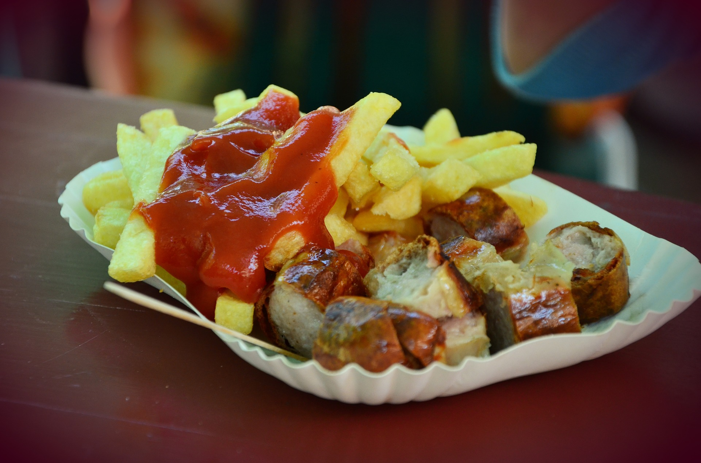
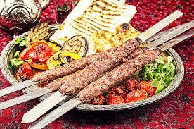

Kabab koobideh
Persisches Originalrezept für Kabab Kubideh! Schnell & einfach mit Schritt-für-Schritt Anleitung.
Zutaten
- 1/2 kg Lammfaschiertes
- 1/2 kg Rindfaschiertes
- 3 Zwiebel
- 1 TL Safran
- 2 TL Sumach
- 2 TL Kurkuma
- Salz, Pfeffer
- Zwiebel fein reiben und die geriebene Zwiebelmasse mit der Hand ausdrücken oder sanft gegen ein Sieb auspressen. Den austretenden Zwiebelsaft wegschütten.
- Faschiertes vom Lamm und Rind gut vermischen und die Zwiebelmasse gut darin verteilen.
- Safran in einer 1/2 Tasse kochendem Wasser auflösen und ca. 10 Minuten ziehen lassen. Dann zum Fleisch geben.
- Sumach, Kurkuma, Salz und Pfeffer darüber streuen und gut vermischen.
- Fleischmasse zumindest 3-4 Stunden im Kühlschrank ziehen lassen.
- Das gut gekühlte Fleisch aus dem Kühlschrank nehmen und mit der Hand auf die Spieße aufbringen. Das erfordert etwas Geschick - am besten aus der Hackfleischmasse eine etwa drei Finger breite und zwei Finger hohe längliche "Wurst" formen, ein gutes Stück kürzer als die Klinge. Dann den Spieß vorsichtig längs durch die Masse schieben. Nach Bedarf etwas nachformen.
- Die Spieße am heißen Grill - optimaler weise direkt über der Glut, ohne Grillrost grillen.
Tipp:Kabab Kubideh wird mit Fladenbrot, frischer Petersilie und frischen Zwiebeln serviert. Es kann aber auch frischer Basmatireis dazu gereicht werden.
Currywurst
Zutaten
- 2 Zwiebeln
- 6 EL Öl
- 3 TL kräftiges Currypulver
- 1 TL brauner Zucker
- 1 EL Tomatenmark
- 200 ml Orangensaft
- 800 g passierte Tomaten
- Salz
- Pfeffer
- 8 grobe Bratwürste